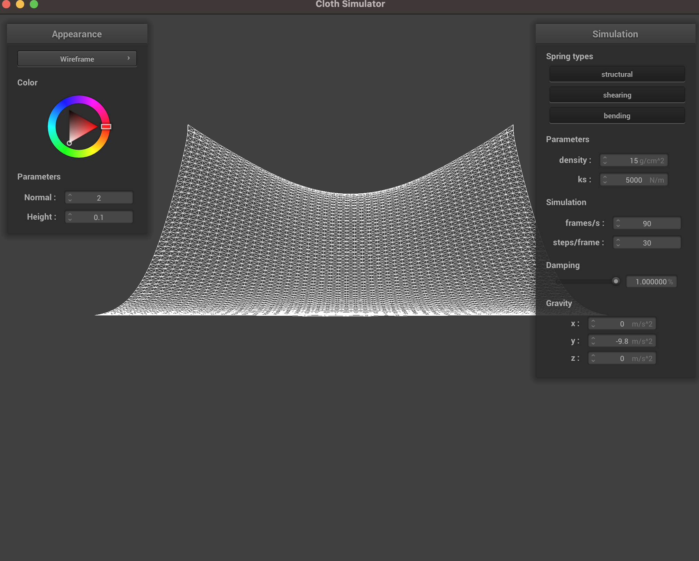

Without shearing constraints:

Only shearing constraints:
All constraints:
Changing the the spring constant ks changes both the tension by which the cloth hangs from the pins, as well as the speed at which the cloth falls during the simulation. From a resting position with a very low ks, such as experimented values like 1 N/m and 100 N/m, the cloth is much more compressed on the left and right sides, and also hangs lower at the top, signifying more effects of gravity pushing down because of the lower tension from the pins. From a resting position with a high ks value, such as experimented values like 10000 N/m, the cloth has almost no compression from the left and right sides, as well as minimal fold at the top. At 100000 N/m, it essentially looks like the cloth is laying flat on the ground stretched out, as the tension from the springs is completely stretching out the cloth.
Changing the density of the cloth also changes how much compression and stretching it experiences. With lower cloth density values, we see the cloth experiencing less downwards stretch at the top folding over, as well as less compression from the left and right sides. With higher density values, the cloth is hanging "heavier" on the pins, so there is more downward pull from gravity, as well as more compression from the left and right sides towards the center of the cloth.
Damping affects the speed and motion at which the cloth gets from start to finish of the simulation. At low percentage damping values, the cloth falls rapidly, and sways back-and-forth in motion, as its very light and affected by forces. Thusk, it takes a while for the cloth to reach a steady state. Also, the non-pinned corners of the cloth flap inwards back-and-forth at ease. At high percentage damping values, the cloth falls very slowly, and almost immediately reaches steady state; there is no flapping back-and-forth occuring because the cloth is much heavier in motion and unaffected.
Default:
Low ks spring value: The cloth hangs much lower at the immediate resting state.

High ks spring value: The cloth hangs much higher and tense at the resting state.

Low density value: The cloth has very little compression hanging off of the pins at the resting state
because it has so little density to weigh it down. Also, it falls quicker from starting resting position
to final resting position.

High density value: The cloth hangs much lower at the resting state because
it is more dense, and also takes a longer time
during the simulation to fall, as the fall is more exaggerated/elongated

Low damping percentage: At all times from the start to end resting state, the cloth flops around
aggressively and loosely, swinging back and forth many times before reaching resting state.
It takes much longer for the cloth to reach steady state than the default parameters, but that is not because
it falls slower Ths is because it is going past the location of resting state, and swining back and forth
over that location sinusoidally.
Here are some images of the swinging back and forth process.
Swinging there:

 Middle:
Swinging back:
Middle:
Swinging back:

High damping percentage: From the start to end resting state, the cloth falls downwards in one predictable motion, not swinging back and forth at all. It reaches the resting state slower than the default parameters, and that is because it is falling slower. Start: Middle: Ending:

Default ks shaded cloth:
Low ks shaded cloth:

High ks shaded cloth:
The major differences in the shaded cloth on the sphere for the different ks values is the looseness in orientation that the cloth is draped over the sphere. In the lowest ks cloth, the cloth is draped most loosely over the cloth, and we can see that the ridges in the cloth barely point outwards, as they're being directed draping downwards. In the highest ks cloth, the cloth is hardly draped tightly over the top of the sphere, and then the rest of the cloth pushes outwards, rather than draping down. The default ks shaded cloth is in-between, with much less outwards push, but some downwards draping.